Für Arbeiten auf Dächern müssen Arbeitsplätze so eingerichtet und beschaffen sein, dass sicheres Arbeiten gewährleistet ist. Dabei sind u. a. zu berücksichtigen:
Arbeitsplätze und Verkehrswege sind so einzurichten, dass die Gefährdung durch Absturz von Beschäftigten so weit als möglich vermieden wird.
| Wesentliche Forderungen aus §12 der DGUV Vorschrift 38, 39 und ASR A2.1: | |
| • | Unabhängig von der Absturzhöhe gilt, dass an Arbeitsplätzen und Verkehrswegen über Wasser oder anderen festen oder flüssigen Stoffen, in denen man versinken kann, Absturzsicherungen benötigt werden. |
| • | Ab 1,00 m Höhe ist zu beachten, dass Absturzsicherungen an freiliegenden Treppenläufen und -absätzen, Wandöffnungen und Bedienungsständen von Maschinen und deren Zugängen benötigt werden. |
| • | Ab 2,00 m Höhe werden an allen übrigen Arbeitsplätzen und Verkehrswegen Absturzsicherungen benötigt. |
Bei der Umsetzung von Arbeitsschutzforderungen ist zu beachten, dass vorrangig technische vor organisatorischen oder persönlichen Maßnahmen anzuwenden sind.
Lassen sich aus arbeitstechnischen Gründen Absturzsicherungen nicht verwenden, müssen stattdessen Einrichtungen zum Auffangen abstürzender Personen vorhanden sein. Auffangeinrichtungen sind Fanggerüste und Auffangnetze.
Anseilschutz darf nur verwendet werden, wenn das Verwenden von Absturzsicherungen und Auffangeinrichtungen unzweckmäßig ist und für die auszuführenden Arbeiten geeignete Anschlageinrichtungen (s. hierzu DGUV I 201-056) vorhanden sind.
Auf Einrichtungen und Maßnahmen zur Sicherung gegen Absturz von Personen kann nur verzichtet werden, wenn Arbeitsplätze oder Verkehrswege auf Flächen mit weniger als 20 ° Neigung liegen und in mindestens 2,00 m Abstand von den Absturzkanten feste Absperrungen vorhanden sind.
Unmittelbar vor Beginn der Arbeiten mit Absturzgefahr, sind die Beschäftigten über die vorhandenen Gefahren und die erforderlichen Schutzmaßnahmen konkret zu unterweisen. Die Unterweisung ist zu dokumentieren.
Im Rahmen der Gefährdungsermittlung und der Personalauswahlverantwortung muss der Unternehmer prüfen, ob die Beschäftigten, welche Absturzgefährdungen ausgesetzt sind, für diese Tätigkeit geeignet sind.
Die Maßnahmen zum Schutz gegen Absturz/Durchsturz sind vor Beginn der Arbeiten sorgfältig zu planen und vorzubereiten. Dabei ist eine Rangfolge der Maßnahmen zu beachten.
Arbeiten ohne Absturzsicherungen sind in der Regel nicht zulässig. Der Unternehmer muss sich zuerst mit der Frage auseinandersetzen, welche Absturzsicherungen zum Einsatz kommen müssen. Absturzsicherungen sind im Wesentlichen Einrichtungen, z. B. Geländer, die verhindern, dass Personen über Absturzkanten hinaus abstürzen können.
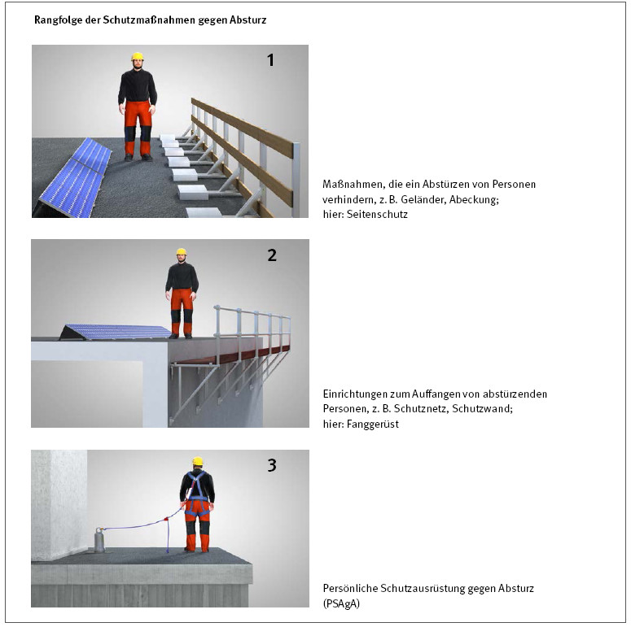
Abb. 1 Rangfolge der Schutzmaßnahmen gegen Absturz in prinzipieller Darstellung
Einige Beispiele sind nachfolgend dargestellt.
Bei Arbeiten auf geneigten Dächern mit einer Dachneigung von mehr als 20° wird ein Dachfanggerüst benötigt. Dabei sind die Abmessungen nach Abbildung 2 einzuhalten:
Werden Arbeiten auf ebenen Flächen (Neigung < 20°) ausgeführt und werden diese ausschließlich weit entfernt von der Absturzkante ausgeführt, ist es ausreichend, sich hinter einer festen Absperrung, z. B. aus Ketten oder Seilen bestehend, aufzuhalten.
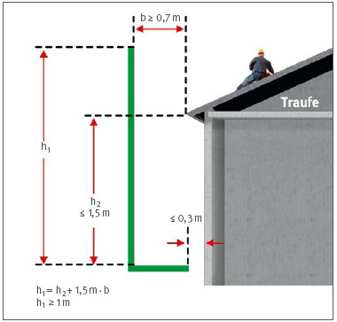
Abb. 2 Abmessungen von Fanggerüsten
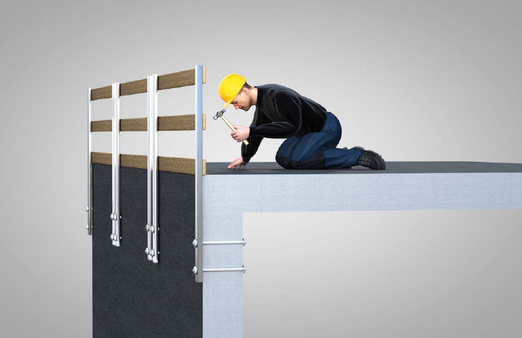
Abb. 3 Beispiel einer Absturzsicherung, welche ab 2,00 m Höhe zwingend erforderlich ist und die direkt an der Absturzkante angebracht ist.
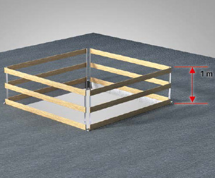
Abb. 4 Die Abb. zeigt eine Absicherung einer Deckenöffnung mit einem dreiteiligen Seitenschutz (Geländer).
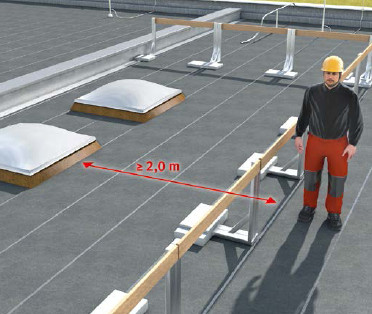
Abb. 5 Absperrung mehrerer Lichtkuppeln
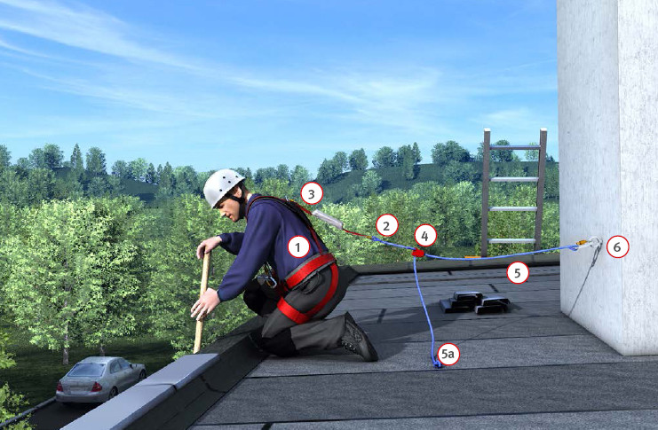
Abb.6 (1) Auffanggurt, (2) Verbindungsmittel, (3) Falldämpfer, (4) mitlaufendes Auffanggerät, (5) bewegliche Führung (z. B. Seil, Band), (5a) Seilendsicherung Die bewegliche Führung (5) muss am mitlaufenden Auffanggerät so eingestellt werden, dass ein Absturz nicht möglich ist. (6) Anschlagpunkt
Besteht die Gefahr des Durchsturzes nach innen, z. B. Lichtkuppeln, Dachöffnungen und nicht tragfähige Dacheindeckungen, sind zusätzliche Maßnahmen erforderlich.
Sind Absturzsicherungen oder Auffangvorrichtungen nicht möglich oder aus anderen Gründen unvertretbar, z. B. bei kurzzeitigen Arbeiten im Rahmen der Instandhaltung oder an Materialübergabestellen (siehe Abschnitt 5.3.1), kann auch „Persönliche Schutzausrüstung gegen Absturz“ (PSAgA) genutzt werden. Bei der Benutzung von PSAgA ist durch den Vorgesetzten der Anschlagpunkt festzulegen. Er hat die Verwendung der PSAgA genauestens vorzubereiten und die Anwendung zu kontrollieren. Die Nutzer sind anhand praktischer Übungen zu unterweisen. Ein Rettungskonzept ist vom Vorgesetzten objektbezogen zu erstellen.
Der Zugang zur Arbeitsstelle auf dem Dach ist bereits in der Planungsphase besonders zu berücksichtigen. Es sollen vorzugsweise bauseitig vorhandene Verkehrswege durch das Gebäude genutzt werden. Dabei stellen Dachausstiege auf Dächer, z. B. für Schornsteinfeger, besondere Gefährdungen dar. Sie müssen ein sicheres Aus-und Einsteigen ermöglichen. Dieses ist in der Regel gegeben, wenn:
Ist der Zugang zur Arbeitsstelle durch das Gebäude nicht möglich, ist ein anderer sicherer Zugang vorzusehen. Vorzugsweise sind Treppentürme in Verbindung mit Gerüsten zu benutzen. Da Leitern sehr unfallträchtig sind, muss deren Verwendung auf ein Minimum beschränkt werden. Zur Durchführung von Arbeiten auf Dächern kann auch der Einsatz von Hubarbeitsbühnen sinnvoll sein. Hierbei werden die Arbeiten aus dem Arbeitskorb heraus durchgeführt.
Von einer Hubarbeitsbühne aus auf das Dach überzusteigen ist grundsätzlich nicht erlaubt, da diese dabei umstürzen oder die übersteigende Person abstürzen kann. Unter Berücksichtigung der Betriebsanleitung und Einhaltung bestimmter Maßnahmen (siehe Anhang 6) kann der Unternehmer im Rahmen einer besonderen Arbeitsanweisung das Übersteigen gestatten. Hierzu muss speziell unterwiesen und geschult werden.
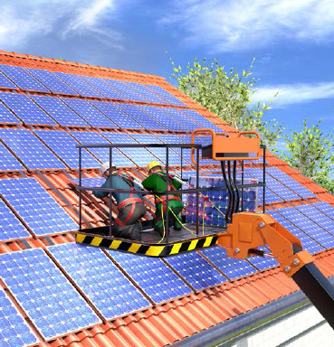
Abb. 7 Beispiel für Arbeiten von einer mobilen Arbeitsbühne aus
Arbeitsflächen und Verkehrswege auf Dächern müssen ausreichend tragfähig und sicher begehbar sein! Als nicht ausreichend tragfähig sind Eindeckungen und Einbauten anzusehen, wie z. B.:
Lichtkuppeln und Dachöffnungen sind durchsturzsicher abzudecken oder durch Geländer zu sichern. Sind diese Maßnahmen nicht möglich, können neben Auffangnetzen auch Fanggerüste, welche unter den Öffnungen platziert werden, zum Einsatz kommen. Auf nicht tragfähigen Dacheindeckungen müssen immer durchtrittsichere Lauf-und Arbeitsstege vorgesehen werden. Zusätzlich müssen für den gesamten Arbeitsbereich Maßnahmengegen Durchsturz, üblicherweise mit Auffangnetzen, getroffen werden. In der Praxis werden die Auffangnetze möglichst etwa 1 bis 2 m unter der Dachfläche montiert. Nähere Informationen zur Auffangnetzmontage sind in DGUV Regel 101-011 enthalten.
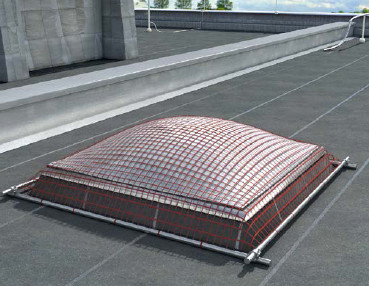
Abb. 8 Lichtkuppel ist ausreichend gegen Durchsturz gesichert. Der Rahmen muss immer alle vier Seiten umschließen und die Stangen müssen miteinander fest verbunden (verschraubt) sein
Es gibt u. a. auch durchsturzsichere Wellplatten. Bei dieser Art von Dacheindeckung, unter Beachtung der maximal zulässigen Unterstützungsabstände gemäß den Herstellerangaben, kann auf Schutzmaßnahmen gegen Durchsturz verzichtet werden. Durchsturzsichere Wellplatten erkennt man an der Kennzeichnung „DS“ im Prägestempel. Durchsturzsichere Wellplatten gelten trotzdem als nicht begehbare Bauteile und dürfen gemäß Herstellerangaben nur über Laufbohlen oder ähnliche Einrichtungen begangen werden. Die Durchsturzsicherheit wird in der Regel vom Hersteller auf 10 Jahre begrenzt.
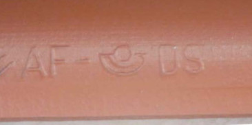
Abb. 9 Prägestempel einer Faserzementwellplatte, DS = Durchsturzsicher, AF = Asbestfrei
Im Allgemeinen muss die Trittsicherheit durch die Gestaltung und Oberflächenbeschaffenheit der Dächer sowie eingesetzter Hilfsmittel (z. B. Dachauflegeleitern) gewährleistet sein.
Ein Schutz gegen Absturz ist bei Arbeitsflächen und Verkehrswegen, welche höher als zwei Meter liegen, immer erforderlich. Alternativ können Arbeitsflächen und Verkehrswege auf Dächern so ausgewählt oder gestaltet werden, dass diese 2 m von Absturzkanten entfernt sind. Hierbei ist aber eine Absperrung zur Absturzkante erforderlich (siehe Abschnitt 5.1.2).
Elektrische Anlagen mit Gleichspannungssystemen wie PV-Anlagen sind gleichermaßen wie Wechselspannungssysteme mit elektrotechnischen Schutzmaßnahmen gemäß der VDE 0100 auszustatten. Hierbei sind insbesondere der Schutz gegen elektrischen Schlag und der Schutz bei Überstrom zu beachten.
Die gebräuchlichsten Maßnahmen bei PV-Anlagen sind:
Hinsichtlich der detaillierten Ausführungsbedingungen der Schutzmaßnahmen wird im Rahmen dieser DGUV Information auf die Normenreihe VDE 0100 verwiesen. An dieser Stelle werden nur die speziellen Besonderheiten der Schutzmaßnahmen an PV-Anlagen aufgezeigt.
5.2.1.1. Wechselrichter mit und ohne galvanische TrennungFür PV-Anlagen werden Wechselrichter mit und ohne galvanische Trennung eingesetzt. Dies hängt vom verwendeten Modultyp (Dünnschichtmodul, kristallines Modul) ab.
Zur Anlagensicherheit verfügen beide Wechselrichterausführungen über eine Isolationsüberwachungseinrichtung (IMD). Bei Wechselrichtern ohne galvanische Trennung („trafolos“) findet vor jedem automatischen Zuschalten eine Prüfung des Isolationswiderstandes statt, z. B. bei jedem Nacht-TagÜbergang. Bei Wechselrichtern mit galvanischer Trennung ist die Isolationsüberwachungseinrichtung dauernd in Betrieb.
Die Überwachung des Isolationswiderstandes kann nur bei wirksamem Potentialausgleich funktionieren (siehe Abbildung 10). Eine regelmäßige Auslesung der Messwerte und Überwachung ist ein wichtiger Bestandteil zum Erhalt des sicheren Zustands der PV-Anlage.
Die unterschiedlichen Wechselrichterausführungen haben spezielle Anforderungen an die Montage und die Fehlersuche zur Folge. Das muss in der Gefährdungsbeurteilung berücksichtigt werden.
| Gefahr: | |
| Entladezeit der Kondensatoren im Wechselrichter entsprechend dem Herstellerhinweis beachten! | 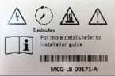 |
| Quelle: Solaredge Technologies GmbH | |
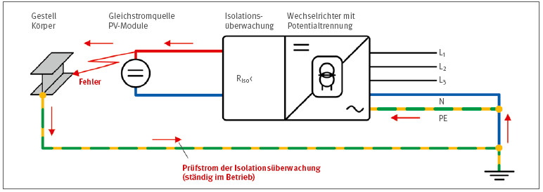
Abb. 10 Wechselrichter mit galvanischer Trennung, Isolationsfehler im DC-System (TN-System auf der AC-Seite)
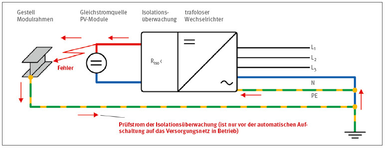
Abb. 11 Wechselrichter ohne galvanische Trennung, Isolationsfehler im DC-System (TN-System auf der AC-Seite)
5.2.1.2. Parallel geschaltete Strings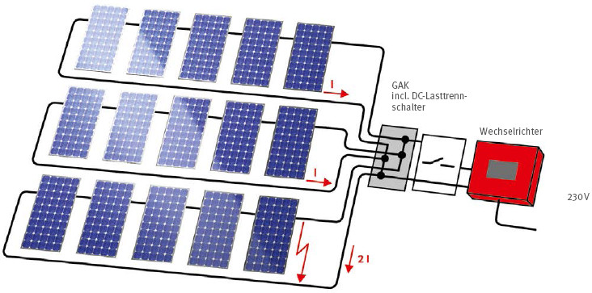
Abb. 12 Stromfluss in parallel geschalteten Strings bei Kurz - oder Erdschluss in einem String (Prinzipdarstellung)
Bei parallel geschalteten Strings besteht unter Umständen die Notwendigkeit, geeignete Überstromschutzeinrichtungen in die einzelnen Strings in Form von Schutzdioden oder Überstromschutzorganen einzusetzen. Werden Sicherungen zum Schutz bei Überlast verwendet und verfügen die Sicherungshalter nicht über einen Berührungsschutz IP 2X („fingersicher“) oder höher, so ist ein Einbau im Handbereich von Bedienelementen, wie z. B. Schalter, Leitungsschutzschalter, nicht gestattet.
Der Einbau von Sicherungshaltern in fingersicherer Ausführung verringert die Gefahr der elektrischen Durchströmung beim Sicherungswechsel unter Spannung. Ist die Fingersicherheit nicht gegeben, muss der Sicherungswechsel gemäß der Arbeitsmethode „Arbeiten unter Spannung“ erfolgen.
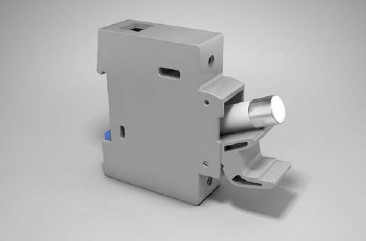
Abb. 13 Sicherungshalter in fingersicherer Ausführung IP 2X, geeignet für den Überlastschutz auf der DC-Seite
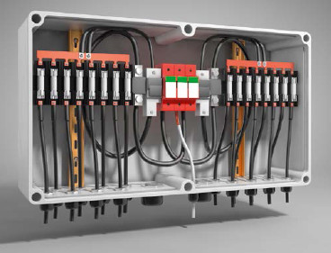
Abb. 14 Verteilerkasten mit Sicherungshalter in nichtfingersicherer Ausführung
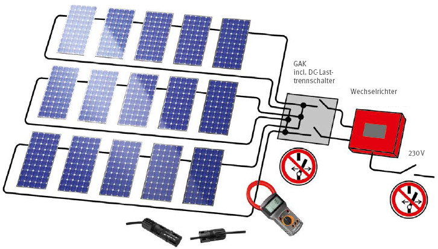
Abb. 15 Nach „Abschalten“ und „Gegen Wiedereinschalten sichern“ wird durch Verwendung einer Strommesszange die Stromfreiheit geprüft. Erst dann kann der einzelne String gefahrlos mittels der DC-Steckverbinder geöffnet werden (Prinzipdarstellung)..
5.2.1.3. Arbeiten auf der DC-Seitea. Arbeiten im spannungsfreien Zustand
Die Methode „Arbeiten im spannungsfreien Zustand“ ist bei Montage, Instandhaltung und Reparaturarbeiten allen anderen Arbeitsmethoden vorzuziehen. An PVAnlagen lässt sich der spannungsfreie Zustand bei solarer Einstrahlung nur durch lichtdichtes Abdecken der Module erreichen. Deshalb muss auf der Generatorseite häufig auf die Methode „Arbeiten unter Spannung“ zurückgegriffen werden. Um ein sicheres Verfahren für Arbeiten unter Spannung zu erreichen, ist es sinnvoll, die Spannungen durch Schalthandlungen auf einen Wert mindestens kleiner DC 120 V oder sogar auf den Wert von DC 60 V zu reduzieren. Spannungen kleiner DC 60 V gelten als nicht mehr berührungsgefährlich, es muss aber die Gefährdung durch Lichtbogeneinwirkung berücksichtigt werden.
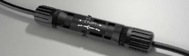
Abb. 16 DC-Steckverbinder mit Warnhinweis
Die Schalthandlungen zum Freischalten und zum Spannungsreduzieren sind sicher auszuführen. Der freigeschaltete bzw. spannungsreduzierte Zustand der Anlage muss für die Zeit der Arbeiten sicher aufrechterhalten werden. Beispielhafte Schalthandlungen für Arbeiten an der Generatorseite werden nachfolgend aufgeführt.
Beim Abschalten der Generatorseite ist sicher zu stellen, dass die elektrischen Verbindungsstellen der Module bzw. der Strings wegen der Störlichtbogengefahr nicht unter Last getrennt werden. Dies gilt unter anderem auch für bestimmte Arten von DC-Schaltern, welche nur als Trennschalter und nicht als Lasttrennschalter ausgeführt sind. Diese Betriebsmittel sind mit einem Warnhinweis versehen (siehe Abbildung 16).
Die Stromfreiheit ist festzustellen:
| Die „5 PV-Sicherheitsregeln“, für Arbeiten an der DC-Seite von PV-Anlagen: | ||
| 1. | Abschalten | |
| - | Freischalten der AC-Seite | |
| - | Wenn möglich, DC-Seite Freischalten, ansonsten DC-Seite stromlos schalten. | |
| 2. | Gegen Wiedereinschalten sichern. | |
| 3. | - | Spannungsfreiheit auf der AC-Seite prüfen |
| - | Stromfreiheit auf der DC-Seite prüfen. Soweit möglich: Arbeitsstelle von speisenden Spannungsquellen (PV-Module) trennen. Gegebenenfalls: Spannungsfreiheit feststellen oder Erreichen der reduzierten Spannung feststellen. | |
| 4. | Soweit erforderlich und möglich: Erden und Kurzschließen. | |
| 5. | Benachbarte berührbare unter Spannung stehende Teile abdecken oder abschranken. | |
b. Arbeiten unter Spannung
Können Spannungsfreiheit bzw. Stromfreiheit nicht hergestellt und sicher aufrecht erhalten werden, oder sind bei den Freischaltvorgängen Betriebsmittel nicht berührungsgeschützt ausgeführt, so sind die Maßnahmen zur Arbeitsmethode „Arbeiten unter Spannung“ anzuwenden. Dieses gilt auch bei Messvorgängen, bei denen eine Berührung von unter Spannung stehenden Teilen nicht ausgeschlossen werden kann.
Prinzipiell werden Arbeiten unter Spannung mit und ohne Anwendung besonderer technischer und organisatorischer Maßnahmen unterschieden. Die besonderen Maßnahmen sind in DGUV Regel 103-011 und 103-012 sowie der VDE 0105-100 beschrieben. Für die durchzuführenden Arbeiten sind auf jeden Fall angemessene Kenntnisse und Erfahrungen erforderlich.
Arbeiten unter Spannung an PV-Anlagen, die besondere technische und organisatorische Maßnahmen erfordern, sind:
Arbeiten unter Spannung an PV-Anlagen, die keine besonderen technischen und organisatorischen Maßnahmen erfordern, sind:
Die o. g. Auflistungen enthalten nur die typischen, bei PV-Anlagen vorkommenden, Arbeiten (u. a. auch für die AC-Seite der PV-Anlage). Auf der Gleichspannungsseite wird häufig das Anbringen von Steckern unter Spannung ausgeführt. Für diese Tätigkeit sind Elektrofachkräfte mit spezieller Kenntnis und Erfahrung für eine sichere Ausführung erforderlich.
Für Arbeiten unter Spannung sind geeignete Arbeitsverfahren festzulegen. Ein empfohlenes Arbeitsverfahren bei Arbeiten an PV-Anlagen ist das „Arbeiten mit Isolierhandschuhen“. Dieses Verfahren wird u.a. auch bei Heranführen von Spannungsprüfern, Mess-und Justiereinrichtungen notwendig, falls eine gefährliche Spannung in Verbindung mit einem unzureichenden Berührungsschutz (kleiner IP 2x) der aktiven Teile vorliegt.
Müssen keine besonderen Schutzmaßnahmen angewandt werden, so ist trotzdem im Rahmen der Gefährdungsbeurteilung zu überprüfen, ob eines der anerkannten Arbeitsverfahren angewendet werden muss. Ist z. B. ein auslösbarer gefährlicher Kurzschlussstrom möglich und liegen die Spannungen unterhalb von 120 V DC (z. B. bei Batterie-Speichersystemen), so ist hier wiederum die Arbeitsmethode „Arbeiten im spannungsfreien Zustand“ bevorzugt anzuwenden. Gefährliche Kurzschlussströme können in der Regel in Stromkreisen mit einem Bemessungsstrom der Sicherungen ab 50 A auftreten.
Ist in dieser Situation ein Freischalten aufgrund technischer Umstände nicht möglich und ist jedoch die Vermeidung eines Kurzschlusses aufgrund der Anwendung von isolierten Handwerkzeugen sowie von isolierenden Abdeckmatten sichergestellt, so kann das Verfahren unter Spannung durchgeführt werden.
Es ist u.a. notwendig, für Arbeiten unter Spannung geeignete Messgeräte sowie Mess-und Prüfspitzen zu verwenden, welche gemäß der DIN EN 61010 nach Messkategorien unterteilt werden. Eine Übersicht über die Anwendungsbereiche geeigneter Messgeräte sowie Mess-und Prüfspitzen bietet nachstehende Tabelle:
Tabelle 1: Anwendungsbereiche und Messkategorien von Messgeräten sowie Mess-und Prüfspitzen
| Messkategorie | Merkmale der Anlage/ des Stromkreises | Beispiele |
| CAT III | Gebäudeinstallation | Messungen an
|
| CAT IV | Quelle der Niederspannungsinstallation | Messungen an:
|
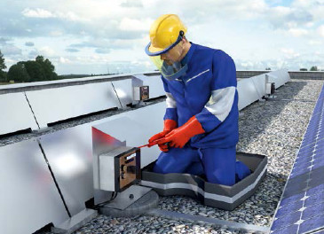
Abb. 17 Arbeiten unter Spannung mit PSA ausführen
Nachfolgend ist die zu verwendende Schutzausrüstung für das Verfahren „Arbeiten mit Isolierhandschuhen“ zusammenfassend aufgeführt:
zusätzliche Ausrüstung:
Es darf nur geprüfte Schutzausrüstung verwendet werden. Diese ist weiterhin vor Gebrauch auf sichtbare Mängel zu prüfen.
c. Besondere Hinweise für die Schutzausrüstung:
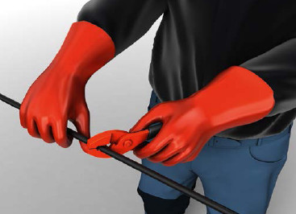
Abb. 18 Isolierende Schutzhandschuhe 1 mm dick (Klasse 0)
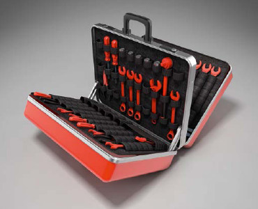
Abb. 19 Isolierendes Werkzeug
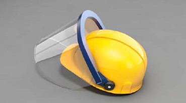
Abb. 20 isolierender Helm mit Gesichtsschutzschirm
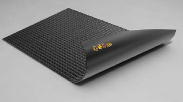
Abb. 21 Isolierende Gummimatte
d. Arbeiten in der Nähe unter Spannung stehender Teile
Befinden sich an der Arbeitsstelle aktive Teile in erreichbarer Nähe, die gemäß den 5 Sicherheitsregeln nicht freigeschaltet werden konnten, so sind die jeweiligen Verfahren für Arbeiten in der Nähe unter Spannung stehender Teile gemäß DIN VDE 0105-100 anzuwenden. Hierbei ist das Verfahren „Schutz durch Schutzvorrichtung, Abdeckung, Kapselung oder isolierende Umhüllung“ (Abschnitt 6.4.2) vorrangig gegenüber dem Verfahren „Schutz durch Abstand und Aufsichtführung“ (6.4.3) anzuwenden. Bei nichtelektrotechnischen Arbeiten ist Abschnitt 6.4.4 zu beachten.
Schutzabstände sind nach Tabellen 3 und 4 der DGUV Vorschrift 3 bzw. 4 oder Tabellen 102 und 103 der DIN VDE 0105-100 festzulegen.
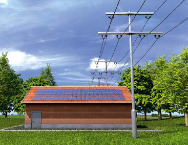
Abb. 22 PV-Anlage, für die Schutzmaßnahmen gemäß den Arbeiten in der Nähe unter Spannung stehender Teile anzuwenden sind
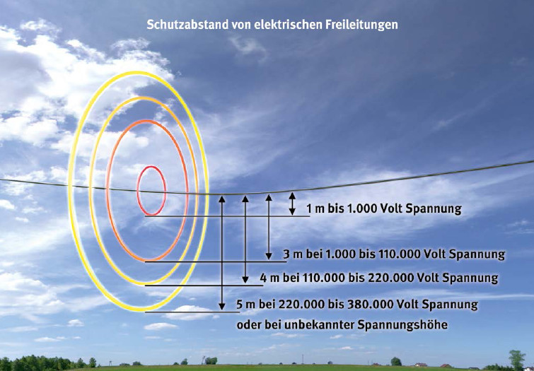
Abb. 23 Schutzabstände, hier z. B. bei einer Freileitung
Es werden oftmals zum Anschluss an die Energieversorgungsnetze kundeneigene Kabeltrassen, Kabelnetze, Schalt-und Trafostationen errichtet und betrieben. Daraus ergeben sich für den Betrieb unter Umständen besondere Bedingungen. Bestimmungen zum Errichten dieser Anlagen finden sich in den Normenreihen VDE 0100 und VDE 0101. Weitere Bestimmungen werden durch die Technischen Anschlussbedingungen (TAB) der Netzbetreiber beschrieben. Die Dimensionierung der Anlagen hinsichtlich ihrer Belastbarkeit wird u.a. durch Gleichzeitigkeitsfaktoren bestimmt. Gegenüber den konventionellen Netzen mit Verbraucheranschlüssen ist bei PV-Anlagen in der Regel ein Gleichzeitigkeitsfaktor von 1 zu Grunde zu legen.
Zur Vermeidung hoher Leitungsverluste werden die Querschnitte von Kabeln und Leitungen höher dimensioniert als bei Verbraucheranschlüssen (empfohlener Spannungsfall <1 %). Als Alternative zu Kupferkabeln werden aus wirtschaftlichen Gründen oft Aluminiumkabel verwendet. Für die Herstellung eines fachgerechten Anschlusses sind Spezialkenntnisse und geeignetes Material erforderlich. Unter anderem ist bei der Brandursachenermittlung in den letzten Jahren eine ungewöhnliche Häufung von mangelhaft ausgeführten Anschlüssen/ Klemmverbindungen der Einspeisekabel auffällig.
Beim Anschluss von Aluminiumkabeln sind folgende Arbeitsschritte einzuhalten:
Das vom Klemmenhersteller angegebene Anzugsdrehmoment ist unbedingt zu beachten.
Die Hersteller von Zubehör zur Kabelmontage bieten für Aluminiumadern geeignete Kabelschuhe mit einem Al/Cu Übergang oder für Aluminiumsektorkabel geeignete Klemmen an.
a. Arbeiten im spannungsfreien Zustand
Die Arbeitsmethode „Arbeiten im spannungsfreien Zustand“ ist vorrangig gegenüber den anderen Arbeitsmethoden anzuwenden. Die jeweiligen Maßnahmen für das Arbeiten im spannungsfreien Zustand sind im Abschnitt 6.2 der VDE 0105-100 beschrieben.
Es werden deshalb nachfolgend nur die besonderen Maßnahmen zum Herstellen des spannungsfreien Zustands bei PV-Anlagen beschrieben.
Netzgekoppelte Anlagen müssen in der Regel mit einer ENS bzw. einem Netz-und Anlagenschutz ausgestattet sein, welches den Wechselrichter bei Netzstörung oder Netzabschaltung selbstständig und zuverlässig abschaltet. Trotz automatischer Abschalteinrichtungen (ENS, Netz-und Anlagenschutz) ist zur Herstellung des spannungsfreien Zustandes sowohl für die netzgekoppelte als auch im Inselbetrieb betriebene PV-Anlage das manuelle Freischalten auf der AC-Seite zwingend erforderlich.
Bei bestimmten Modultypen ist aufgrund des TCO-Korrosions- und PID-Effekts eine Erdung des Plus-oder Minuspols der Modulstrings vorhanden oder anstelle der Erdung eine Offsetkompensationsanlage eingebaut. Die Offsetkompensationsanlage ist in die Schalthandlungen zum Freischalten einzubeziehen.
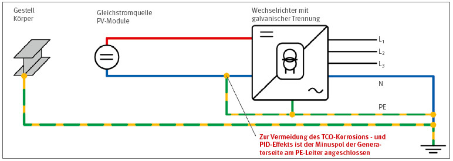
Abb. 24a Wechselrichter mit galvanischer Trennung und Anschluss eines Poles der Generatorseite an den PE-Leiter zur Vermeidung des TCO-Korrosions-und PID-Effekts
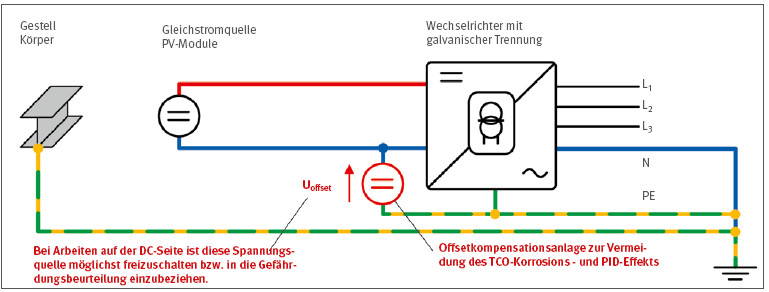
Abb. 24b Wechselrichter mit galvanischer Trennung und Offsetkompensationsanlage zur Vermeidung des TCO-Korrosions-und PID-Effekts
Unter anderem werden auch gesamte Wechselspannungsnetze als IT-System in Verbindung mit Offsetkompensationsanlagen betrieben, um den TCO-Korrosions- und PID-Effekt von bestimmten Modultypen einzudämmen. Hierbei wird der Neutralleiter erdbezogen auf einem definierten Potential gehalten. Diese Spannung wird von der Offsetkompensationsanlage erzeugt bzw. geregelt und kann eine für den Menschen gefährliche Spannung verursachen.
Beim Einsatz von Offsetkompensationsanlagen auf der AC-Seite ist immer darauf zu achten, dass der Neutralleiter von der Offsetkompensationsanlage für die Anwendung der Arbeitsmethode „Arbeiten im spannungsfreien Zustand“ freigeschaltet wird.
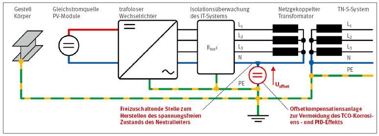
Abb. 25 Anwendung des IT-Systems in Verbindung mit einer Offsetkompensationsanlage zur Vermeidung des TCO-Korrosions-und PID-Effekts
b. Arbeiten unter Spannung
Die Arbeitsmethode „Arbeiten unter Spannung“ ist bereits im Abschnitt 5.2.1.3 b dieser Information ausreichend beschrieben. Bei Arbeiten auf der AC-Seite der PV-Anlage ist analog der dort genannten Vorgehensweisen zu verfahren.
c. Arbeiten in der Nähe unter Spannung stehender Teile
Die Arbeitsmethode „Arbeiten in der Nähe unter Spannung stehender Teile“ ist bereits im Abschnitt 5.2.1.3 dieser DGUV Information ausreichend beschrieben. Bei Arbeiten auf der AC-Seite der PV-Anlage ist analog der dort genannten Vorgehensweisen zu verfahren.
Da bei PV-Anlagen meist sehr lange leitfähige Gestellteile (bis zu 6 m Länge) verwendet werden, ist unter Umständen ein Erreichen der Gefahrenzone von Freileitungen möglich (siehe Abbildung 23).
Wird der ermittelte Schutzabstand durch Annäherung von Körperteilen oder Gegenständen unterschritten, so ist die Freileitung entweder freizuschalten oder mit isolierende Abdeckungen auszustatten. Diese Arbeiten müssen vom Netzbetreiber ausgeführt bzw. veranlasst werden.
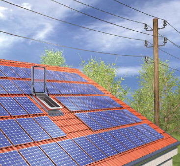
Abb. 26 Niederspannungsfreileitung in der Nähe einer PV-Anlage
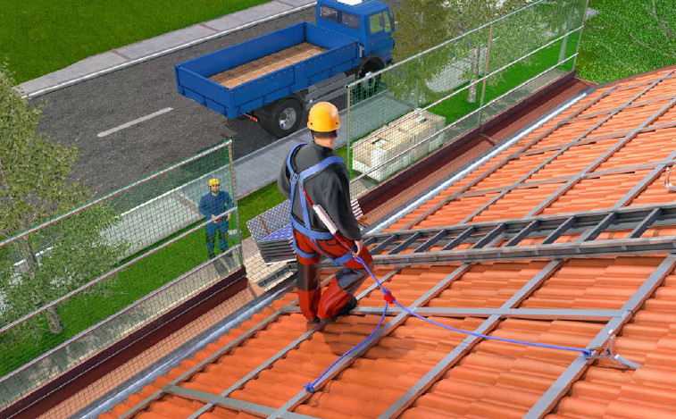
Abb. 27 Materialtransport bei entfernter Schutzeinrichtung unter Verwendung von PSAgA
Der Materialtransport zur Dachfläche hat auf Basis der Gefährdungsbeurteilung mit geeigneten Einrichtungen und Hilfsmitteln zu erfolgen. Wird ein manueller Transport durchgeführt, sind geeignete Verkehrswege einzurichten. Der Einsatz von Arbeitsgerüsten ist dem Einsatz von Leitern vorzuziehen. Bei der Verwendung von Leitern ist zu beachten, dass gemäß der DGUV Vorschrift 38 und 39 Gewichte bis zu 10 kg und Windangriffsflächen bis zu 1m2 für den Materialtransport zugelassen sind. Der überwiegende Teil der marktüblichen PV-Module verfügt über eine Modulfläche von mehr als 1 m2. Deshalb dürfen solche Module nicht über Leitern transportiert werden.
Geeignete Transportmittel sind:
Hubarbeitsbühnen sind grundsätzlich nur eingeschränkt für den Materialtransport verwendbar. Es ist hierzu eine spezifische Gefährdungsbeurteilung unter Berücksichtigung der Bedienungsanleitung des Herstellers erforderlich.
Werden Baustellenaufzüge eingesetzt, so ist darauf zu achten, dass durch den Aufbau der Aufzüge Schutzeinrichtungen gegen Absturz nicht entfernt bzw. unwirksam gemacht werden. Es empfiehlt sich, Gerüste bzw. Schutzgerüste so zu planen, dass der Lastenaufzug oberhalb des Seitenschutzes bzw. der Schutzwand geführt werden kann. Ebenfalls ist bei einer solchen Planung darauf zu achten, dass das Gerüst die auftretenden Belastungen durch den Aufzug aufnehmen kann. Müssen trotzdem Schutzeinrichtungen gegen Absturz aufgrund des Materialtransports mittels Lastenaufzüge entfernt werden, so sind an den entsprechenden Absturzstellen geeignete Schutzmaßnahmen zu ergreifen. Hier empfiehlt sich der Einsatz von PSAgA während der Dauer der Transportarbeiten. Nach Beendigung der Transportarbeiten sind die entfernten Schutzeinrichtungen unter Anwendung von PSAgA wieder anzubringen.
Bei Lagerung und Transport der PV-Module können sich weitere mechanische Gefährdungen ergeben, z. B. durch:
Durch die Festlegung von Maßnahmen zur Gefahrenabwehr, wie Ladungssicherung, Beachtung von Verkehrssicherungsmaßnahmen, sichere Lagerung der Module und Benutzung von Schutzhandschuhen werden mechanische Gefährdungen verringert.
Gemäß der Gefahrstoffverordnung und den technischen Regeln für Gefahrstoffe (TRGS 519) dürfen an asbesthaltigen Produkten ausschließlich Abbrucharbeiten durchgeführt werden (§ 18 Abs. 1 Gefahrstoffverordnung). Das gilt nicht nur für normal auf Unterkonstruktion montierte PV-Anlagen, sondern ebenfalls für aufgeständerte Anlagen.
Bereits seit Jahren liegt die Erkenntnis vor, dass UVStrahlung Hautkrebserkrankungen verursachen kann. Je nach Arbeitsdauer und Witterung sind Schutzmaßnahmen zur Reduzierung der UV-Strahlungsexposition notwendig. Abschattungsmaßnahmen sind zu bevorzugen. Bei der Montage von PV-Anlagen ist das aber nur bedingt möglich. Deshalb ist für lichtdichte Kleidung, Kopfbedeckung sowie Haut- und Augenschutz zu sorgen. Der Betriebsarzt kann zur Festlegung und Abstimmung der Maßnahmen einbezogen werden.
Da die Montage der Unterkonstruktion und der Module einer PV-Anlage von Hand erfolgt, kommt es für die Mitarbeiter, die diese Arbeiten ausführen, zu einer physischen Belastung durch Heben, Halten und Tragen von Lasten. Beim Gehen auf geneigten Dachflächen führt die der Dachneigung angepasste Fußstellung zu einer starken Belastung der Gelenke. Hinzu kommt eine starke Rückenbelastung durch Tätigkeiten in gebückter Zwangshaltung (Rumpfbeugehaltung). Durch den Handtransport (Aufnahme, Transport und Absetzen) der teilweise über 20 kg schweren Module erhöht sich die Rückenbelastung.
Maßnahmen, um Rücken-, Muskel-und Gelenkbeschwerden zu vermeiden, sind:
Bei Bedarf sind den Mitarbeitern Nässe- und Kälteschutzkleidung zur Verfügung zu stellen. Schutzhandschuhe schützen die Hände vor Schnittverletzungen durch die oft scharfkantigen Profile.
Elektrische Prüfungen dürfen nur von Elektrofachkräften oder unter deren Leitung und Aufsicht von elektrotechnisch unterwiesenen Personen durchgeführt werden. Für die Messung müssen geeignete Messgeräte und entsprechendes Messzubehör verwendet werden (vergleiche Abschnitt 5.2.1.3 Tabelle 1).
Tabelle 2: Prüfungen
| Wann | Wo | Was | Wer |
| Täglich | Wechselrichter | Kontrolle der Betriebsanzeige | Betreiber |
| Betriebsdatenüberwachung (System) | Kontrolle des Betriebszustandes per Fernüberwachung (Für den Brandschutz ist insbesondere auf Isolationsfehler zu achten.) | Betreiber/ Elektrofachkraft | |
| Fehlermeldungen analysieren und geeignete Maßnahmen ergreifen | Elektrofachkraft | ||
| Monatlich | Generatorfläche | Sichtprüfung auf offensichtliche Mängel, wie z. B. herunterhängende Module, Modulklammern, Montagegestellteile oder PV-Leitungen | Betreiber |
| Intervall von 4 Jahren | Gesamtanlage | Wiederholung der Messungen und Prüfungen nach DIN VDE 0105-100, DIN VDE 0100-600 bzw. DIN VDE 0126-23 | Elektrofachkraft |
Die sachgerechte Reinigung von Anlagen erfordert Fachwissen und materielle Voraussetzungen. Im Vorfeld muss geklärt werden, ob die Anlage überhaupt betreten werden kann und welche Reinigungstechnik zur Anwendung kommen soll bzw. darf. Für die Arbeiten sollten bevorzugt Hubarbeitsbühnen eingesetzt werden. Ist der Einsatz nicht möglich und müssen Dachflächen betreten werden, besteht bei dieser Arbeit sehr hohe Absturz-und Durchsturzgefahr. Deshalb dürfen diese Tätigkeiten nur unter Beachtung der Schutzmaßnahmen gegen Absturz durchgeführt werden. Kommt PSAgA zur Anwendung, ist durch den Aufsichtsführenden ein ausreichend tragfähiger Anschlagpunkt zu benennen.
In der Regel fallen Reinigungsarbeiten nur für die Modulflächen an. Diese Arbeiten werden oft mit Wasser durchgeführt. Die Zellen sowie deren Verbindungen in den Modulen sind entsprechend den zu erwartenden Witterungsbedingungen geschützt. Die Modulhersteller weisen deshalb meist keine Schutzart hinsichtlich des Eindringens von Nässe aus. Letztendlich sind nur die Modulanschlusskästen, Steckverbinder und Verteilerkästen mit Schutzarten gegen Eindringen von Nässe gekennzeichnet. Modulanschlusskästen und Steckverbinder verfügen in der Regel über Schutzarten von IP X6 (Strahlwasser geschützt) und höher. Bei Verteilerkästen liegt überwiegend die Schutzart IP X5 (Spritzwasser geschützt) und höher vor. Werden Reinigungsarbeiten mit Wasser durchgeführt, so sind die Art und Weise der Tätigkeiten entsprechend der vorliegenden Schutzarten der Betriebsmittel anzupassen. Folgende Maßnahmen werden grundsätzlich empfohlen:
Müssen PV-Anlagen vom Schnee geräumt werden, dürfen diese Konstruktionen nur dann betreten werden, wenn sichergestellt ist, dass die Tragfähigkeit der gesamten baulichen Anlage gewährleistet ist. Bei der Schneeräumung besteht die besondere Gefahr des Durchsturzes, da nicht durchtrittsichere Bereiche, wie z. B. Oberlichter oder Faserzementplatten, nur schwer erkannt werden können, wenn sie schneebedeckt sind.
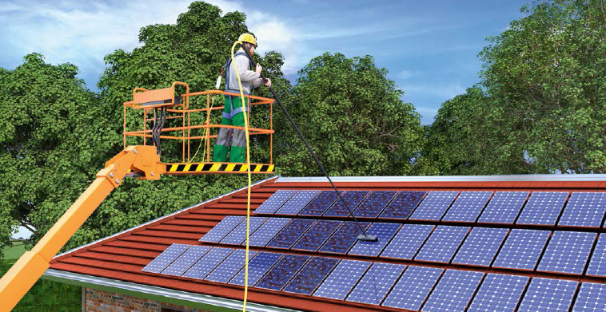
Abb. 28 Reinigung einer PV-Anlage von einer Hubarbeitsbühne aus
Der Modultausch an einer bestehenden PV-Anlage aufgrund einer Beschädigung oder eines Defektes erfordert eine planmäßige Vorgehensweise nach einer tätigkeitsbezogenen Gefährdungsbeurteilung (siehe Anhang), die eine vorhandene Gefährdungsbeurteilung ergänzt. Hierzu ist es notwendig, dass
Der Transport der Module über eine Leiter scheidet wegen des Gewichts, der Abmessungen und der Montagehöhe meist aus.
Der Einsatz eines Gerüstes, Mobilkrans, Schrägaufzugs oder der Innentransport ist zu prüfen.
Die Anlage ist für die Dauer des Modultausches frei zu schalten.
Bei Mäharbeiten ist darauf zu achten, dass durch Mähgeräte oder -fahrzeuge elektrische Anlagenteile nicht beschädigt bzw. durch diese Arbeiten keine elektrischen Gefährdungen verursacht werden. Dies erfordert die Unterweisung der Mitarbeiter und den Einsatz von geeigneten Geräten und Maschinen sowie erforderlichenfalls technischen Schutzeinrichtungen.
Werden zur Grünpflege Tiere eingesetzt, so sind die Betriebsmittel wie z. B. Anschlussleitungen und Verteilerkästen gegen die zu erwartenden möglichen Beschädigungen zu schützen.